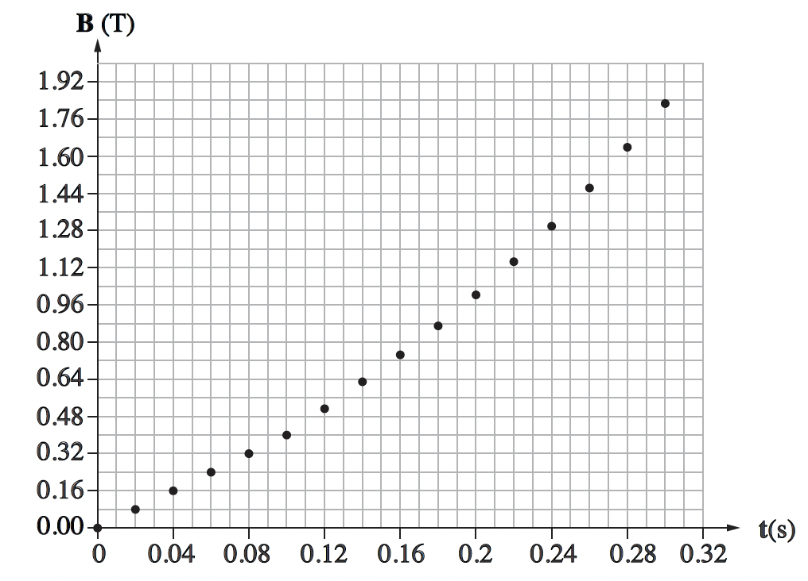

שאלה 5
תלמידה בנתה מתיל מוליך כריכה מעגלית שהרדיוס שלה r = 2 cm. היא הציבה את הכריכה באזור ששורר בו שדה מגנטי אחיד B, שכיוונו מאונך למישור הכריכה.
גודלו של B משתנה כפונקציה של הזמן, t, כמתואר בגרף שלפניכם.

qimage-1.png
א.
קבעו אם הכא"מ המושרה בכריכה הוא קבוע או משתנה, בכל אחד מפרקי הזמן שלפניכם:
(1) 0 ≤ t ≤ 0.10 sec
(2) 0.14 sec ≤ t ≤ 0.30 sec
נמקו את קביעותיכם. (10 נקודות)
ב.
חשבו את הכא"מ המושרה בכריכה ברגע t = 0.06 sec וברגע t = 0.20 sec. (10 נקודות)
ג.
קבעו מהו הכיוון של השדה המגנטי שהזרם המושרה יוצר במרכז הכריכה: האם הוא בכיוון זהה לכיוון של B, בכיוון מנוגד לכיוון של B או בכיוון ניצב לכיוון של B? נמקו. (8 נקודות)
ד.
חשבו את הגודל של הכא"מ המושרה שמתקבל בכריכה ברגע t = 0.06 sec, כאשר כיוון השדה המגנטי B מקביל למישור הכריכה. הסבירו. (5 1/3 נקודות)